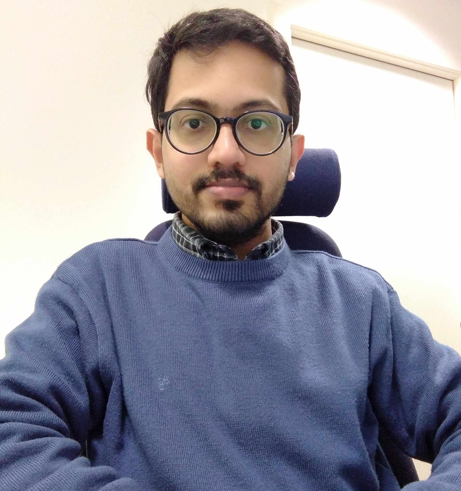

Jayakrishnan Madathil

I am currently a postdoctoral researcher in the School of Computing Science at the University of Glasgow, where I am part of the Beyond One Solution in Combinatorial Optimisation project led by Kitty Meeks. Before moving to Glasgow, I was a postdoc at the Chennai Mathematical Institute, and briefly an Early Career Fellow at IIT Gandhinagar. I did my PhD at The Institute of Mathematical Sciences (IMSc), Chennai.
Research Interests
I work primarily in algorithm design. My research interests, in no particular order, include parameterized algorithms, kernelization, approximate counting, computational social choice theory etc. Some of my recent and ongoing works involve problems at the intersection of economics and computation.
News and Updates
- Extended abstract accepted to AAMAS 2023: The Complexity of Minimizing Envy in House Allocation
- with Neeldhara Misra and Aditi Sethia
Publications
Also availabe at dblp and Google Scholar.- Further Exploiting c-Closure for FPT Algorithms and Kernels for Domination Problems
- with Lawqueen Kanesh, Sanjukta Roy, Abhishek Sahu and Saket Saurabh
- STACS 2022
- A Polynomial Kernel for Bipartite Permutation Vertex Deletion.
- with Jan Derbisz, Lawqueen Kanesh, Abhishek Sahu, Saket Saurabh and Shaily Verma
- IPEC 2021
- Algorithmica, 2022
- Odd Cycle Transversal in Mixed Graphs
- with Avinandan Das, Lawqueen Kanesh and Saket Saurabh
- WG 2021
- On the Complexity of Singly Connected Vertex Deletion
- with Avinandan Das, Lawqueen Kanesh, Komal Muluk, Nidhi Purohit and Saket Saurabh
- IWOCA 2020
- Theoretical Computer Science, 2022
- A Sub-Exponential FPT Algorithm and a Polynomial Kernel for Minimum Directed Bisection on Semicomplete Digraphs
- with Roohani Sharma and Meirav Zehavi
- MFCS 2019
- Algorithmica, 2021
- Parameterized Complexity Classification of Deletion to List Matrix-Partition for Low-Order Matrices
- with Akanksha Agrawal, Sudeshna Kolay and Saket Saurabh
- ISAAC 2019
- On the Complexity of Mixed Dominating Set
- with Fahad Panolan, Abhishek Sahu and Saket Saurabh
- CSR 2019
- Connecting the Dots (with Minimum Crossings)
- with Akanksha Agrawal, Grzegorz Guspiel, Saket Saurabh and Meirav Zehavi
- SoCG 2019
- An Erdős-Pósa Theorem on Neighborhoods and Domination Number
- with Pranabendu Misra and Saket Saurabh
- COCOON 2019
- Max-Cut Above Spanning Tree is Fixed-Parameter Tractable
- with Saket Saurabh and Meirav Zehavi
- CSR 2018 (Best Paper Award)
- Theory of Computing Systems (TOCS), 2020 (retitled: Fixed-Parameter Tractable Algorithm and Polynomial Kernel for Max-Cut Above Spanning Tree)
- Mixed Dominating Set: A Parameterized Perspective
- with Pallavi Jain, Fahad Panolan and Abhishek Sahu
- WG 2017